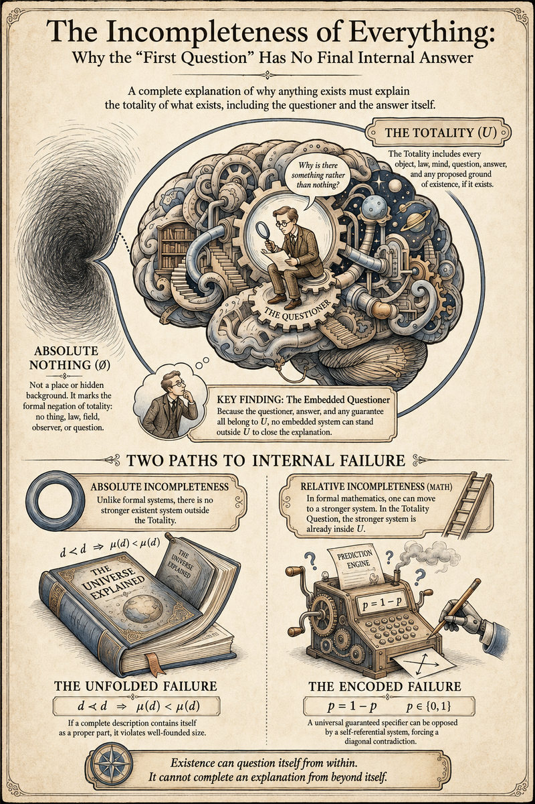

Why Is There Something Rather Than Nothing?
Abstract
The question why is there something rather than nothing? is often treated as a request for a first cause, a necessary being, a law behind the laws, or a final reason for the existence of the universe. This article sharpens the question into its strongest form. In that form, something means the totality of whatever exists. The questioner, the question, and any answer that might be given all belong to that totality. A complete answer would therefore have to explain the totality while also including itself as one of the things explained. The resulting structure is self-referential.
There are two formal routes. In an unfolded description, the answer would have to contain itself as a proper component, forcing d ≺ d and violating the well-foundedness condition x ≺ y ⇒ μ(x) < μ(y). In an encoded description, a universal guaranteed specifier faces the diagonal equation p = 1 - p for p ∈ {0,1}. The result is an absolute internal incompleteness theorem for the first question: every embedded answerer is inside the totality it tries to close over, so no internally guaranteed final explanation of the whole can be completed from within the whole.
1. The First Question
Why is there something rather than nothing? asks for the reason that reality exists at all. It reaches beneath ordinary explanations. A mountain can be explained by geology. A star can be explained by gravity, gas, pressure, and fusion. A human question can be explained by biology, language, memory, and culture. The first question asks why the whole field containing all mountains, stars, organisms, laws, memories, and explanations exists in the first place.
The question becomes difficult because ordinary explanation usually moves from one existing thing to another existing thing. We explain an event by appealing to prior events, conditions, laws, causes, or grounds. In the strongest form of the first question, every such appeal is already inside the subject matter. A law, a cause, a necessary being, a quantum state, a mathematical structure, a possibility space, or an explanatory principle counts as part of something if it exists.
This is the first discipline required by the question. The word something must be used in the total sense:
U = the totality of what exists
Here U names the totality of existents. It includes physical objects, minds, questions, answers, laws, relations, abstract entities if they exist, and any proposed ground of existence if that ground exists. The question is therefore:
QU: why U rather than ∅?
Here ∅ does not name an empty space or hidden background state. It marks the formal negation of such a totality: no existent thing, law, field, observer, or question. Once that meaning is fixed, the boundary of the problem becomes exact, even though the totality itself cannot be completely specified from within.
Universe 00110000
2. The Main Historical Routes
The history of the question can be read as a sequence of attempts to locate a reason deep enough to explain the whole. The classical cosmological route begins from contingency, change, dependence, or causation. If the world contains things that might have failed to exist, then their existence seems to call for a ground. This route appears in different forms in Aristotle, medieval philosophy, Islamic kalam reasoning, Leibniz, and later natural theology. Its strongest versions seek a necessary being or a sustaining ground whose existence does not depend on anything else.
The Leibnizian route uses the Principle of Sufficient Reason. In simple form, the principle says that every fact has a sufficient reason why it is so and not otherwise. Applied to ordinary facts, the principle is powerful and natural. Applied to totality, it becomes unstable. If every fact has a reason, then the fact that the totality exists must also have a reason. If that reason exists, it belongs to the totality. If it does not exist, it cannot serve as an existent reason. The principle therefore presses the mind toward a total explanation while also forcing the explanation back inside the totality it is meant to ground.
William Rowe sharpened the difficulty as a contingency dilemma. If the explanation appeals to a contingent truth, that truth is part of what needs explaining. If it appeals to a necessary truth, it remains unclear how necessity alone yields the existence of this contingent reality. The dilemma shows why the demand for a total explanation is stricter than an ordinary request for a cause.
A second route treats existence as necessary. On this view, absolute nothing is impossible. There had to be something. This approach changes the question from causation to modality. It asks whether non-being is a genuine alternative. If the empty totality is impossible, then the existence of something follows from necessity. The difficulty is explanatory. Even if a proof showed that something must exist, the proof itself would exist within the totality it helps describe. The proof may remove contingency from the question, but the act of complete closure still falls under the totality condition.
A third route accepts brute existence. Reality exists without a further reason. This view has the advantage of honesty. It refuses to invent a hidden ground. Its cost is also clear. The first question survives as an intelligible pressure on the claim. The statement U exists for no reason is itself a final claim about U, made from inside U, by a system that cannot occupy an external position over U.
A fourth route comes from physics. Modern cosmology can explain the development of our observable universe from earlier physical states. Quantum cosmology can explore models in which classical spacetime emerges from deeper conditions. In those models, the word nothing usually means no ordinary matter, no classical spacetime, or no particles in a vacuum state. Such states are still described by laws, formalisms, amplitudes, symmetries, or mathematical structures. Absolute nothing in the totality sense has no such structure.
Each route clarifies a different layer: causal dependence, sufficient reason, necessity, brute existence, or physical origin. The totality form of the question adds a stricter demand. Any proposed reason that exists is already counted inside U.
The companion article Axiom of Absolute Infinity develops the axiomatic side of this boundary. It treats unrestricted totality as the minimal stance once derivation from absolute nothingness and appeal to an external ground both reach their limit.
3. The Embedded Starting Point
A firmer starting point is the occurrence of the question. Before any cosmology is chosen, before any metaphysical doctrine is accepted, awareness or questioning is occurring. There is a questioner, or at least a questioning system. Call that system S.
S ⊆ U
The answer produced by that system also exists once it is produced. Call the answer or description d.
d ∈ U
This simple inclusion changes the problem. The question is an event inside reality. Its answer, if it appears, is another event or structure inside reality. A final explanation of the whole must therefore account for the existence of the explanation itself.
The central implication can be written as:
CompleteAnswerS(QU) ⇒ CompleteSpecS(U)
The bridge is important. A casual answer can explain one region of reality without specifying the whole. The first question asks for the reason of the whole. A complete answer to the question must therefore become a complete specification or complete grounding account of the totality. The word complete carries the burden. It requires all relevant existents, all conditions of the answer, and the guarantee that the answer succeeds.
The operational minimum for such an embedded answerer is treated in Horizon Constant K0. There the basic requirements are state distinction, prediction, and verification. In this article those requirements appear as the conditions needed for a system S to form, test, and certify an answer while remaining inside U.
Universe 00110000
4. The Totality Equation
Let Expl(d,x) mean that the description d explains, covers, or accounts for x. A complete explanation of the totality requires:
∀x (x ∈ U ⇒ Expl(d,x))
Since the answer itself exists, d ∈ U. Substitution gives:
Expl(d,d)
The answer must explain itself. It must also explain the system that generated it, the conditions that allowed that system to exist, and the act by which the answer is recognized as complete. If a verifier is added, the verifier exists too:
v exists ⇒ v ∈ U
Adding a verifier therefore increases the content that the final explanation must include. Moving to a stronger meta-language has the same structure. If the meta-language exists, it belongs to U. If the meta-theory exists, it belongs to U. If the external judge exists, it belongs to U.
The outside route closes immediately by definition:
c exists ∧ c ∉ U ⇒ c ∈ U ∧ c ∉ U ⇒ ⊥
Any existing cause outside the totality is already inside the totality. The phrase outside everything can be used grammatically, but the formal condition contradicts the meaning of everything.
5. The Unfolded Failure
There are two ways an answer can try to include itself. The first is unfolded inclusion. The answer attempts to contain the whole account inside itself. Let x ≺ y mean that x is a proper component of y. If d is a complete unfolded description of U, and d is itself part of U, then the description must contain itself as a proper component:
d ≺ d
Finite well-founded descriptions have a rank or size measure μ. Proper components are smaller than the wholes that contain them:
x ≺ y ⇒ μ(x) < μ(y)
Apply this to d ≺ d:
d ≺ d ⇒ μ(d) < μ(d)
The inequality is impossible. No number is smaller than itself. The contradiction is:
CompleteSpecunfolded(U) ⇒ d ≺ d ⇒ μ(d) < μ(d) ⇒ ⊥
Partial explanations remain intact. The obstruction concerns a finite unfolded object trying to contain a complete proper copy of itself while remaining well-founded. A book can mention its own title. A theory can contain a symbol that names the theory. A final unfolded explanation of the whole asks for more. It asks the explanation to include itself as part of the complete reality it explains.
6. The Encoded Failure
The second route uses encoding. Instead of placing a full copy of itself inside itself, the answer uses a pointer, a name, an index, a rule, or a code. This avoids the immediate size contradiction. It enters the diagonal regime.
Let P be a proposed universal specifier. It receives a description of a system and outputs a binary prediction about that system's next settled state. The output is either 0 or 1. A complete internal specifier must be correct even for systems that refer to the specifier itself.
Construct a diagonal system DP whose next state is defined against the prediction made by P:
φt+1(DP) = 1 - P(DP)
If P is complete and correct on this system, then:
P(DP) = φt+1(DP)
Substitution gives:
P(DP) = 1 - P(DP)
Writing p = P(DP), the equation becomes:
p = 1 - p, p ∈ {0,1}
No binary value satisfies this equation. If p = 0, the diagonal system outputs 1. If p = 1, the diagonal system outputs 0. The scope of the obstruction is the universal guarantee: no single internal specifier can be correct across all constructible systems that can refer to and react against its own output.
The encoded route therefore reaches the second contradiction for a universal guaranteed specifier:
CompleteSpecencoded, universal(U) ⇒ p = 1 - p, p ∈ {0,1} ⇒ ⊥
This is the same diagonal family developed in Self-Referential Paradox of Accurate Prediction (SPAP). SPAP studies perfect self-prediction; the present article studies complete totality-specification. In both cases, the obstruction appears when a system must handle a construction that refers back to its own output.
Universe 00110000
7. The Incompleteness Theorem of the First Question
The result can now be stated directly.
For every embedded system inside the totality of what exists, no internally guaranteed complete answer to the question why the totality exists can be produced by that system.
In symbolic form:
∀S (S ⊆ U ⇒ ¬∃d [CompleteAnswerS(QU) ∧ GuaranteeS(d)])
The proof has only a few moving parts:
- Totality. U contains every existent.
- Embeddedness. Any actual questioner S and any actual answer d belong to U.
- Completeness. A complete answer to QU must account for all of U, including itself.
- Well-foundedness or correctness. An unfolded description cannot contain itself as a proper component; an encoded universal description cannot remain correct under diagonal opposition.
These assumptions are modest once the strongest version of the question is accepted. A weaker question can ask for the origin of our universe, the ground of physical law, the cause of a contingent world, or the best explanation available to finite minds. The theorem concerns the totality-closing question. It targets the demand for a final answer that explains all existence from a position that also guarantees its own completeness.
8. Relation to Gödel
Gödel's incompleteness theorems give the nearest mathematical analogy. Gödel showed that any consistent formal system strong enough to express elementary arithmetic contains statements that cannot be proved or disproved inside that system. His second theorem showed that such a system cannot prove its own consistency from within itself.
Three features matter here. First, Gödel works with formal axiomatic systems. A system has symbols, formation rules, axioms, and rules of inference. Second, the system must be strong enough to represent arithmetic. This allows the system to encode statements about its own proofs. Third, the proof uses self-reference through arithmetization and diagonalization. The system is made to face a sentence that, in effect, speaks about its own provability.
Gödelian incompleteness is relative to a formal system F:
Consistent(F) ∧ Arithmetic(F) ⇒ ∃GF [UnprovableF(GF) ∧ UnrefutableF(GF)]
A statement undecidable in one system may become decidable in a stronger system. Add the statement as a new axiom and the original obstacle moves upward. Gödel's theorem concerns formal provability inside sufficiently strong consistent systems.
The first question has a related structure over a wider domain: U, the totality of existents. Moving to a stronger system does not escape the theorem, because the stronger system also exists:
F' exists ⇒ F' ∈ U
The same holds for a meta-theory, a metalanguage, a proof checker, a divine intellect if treated as existent, a platonic structure if treated as existent, or a final law if treated as existent:
M exists ⇒ M ∈ U
Gödel shows that formal systems containing arithmetic cannot exhaust their own arithmetic truth from within. The totality argument shows that an embedded answerer cannot exhaust the totality that contains the answerer, the answer, and the guarantee of the answer. The shared pattern is self-reference. The difference is scope. Gödel is system-relative. The first question is totality-relative, and totality has no larger existent domain outside it.
9. Why the Incompleteness Is Absolute
Here absolute has a precise sense: the escape route used in ordinary incompleteness results is unavailable. In a formal system, one can move from F to a stronger F'. In a scientific theory, one can move from an older model to a deeper model. In an ordinary explanation, one can move from a local fact to a wider context. The first question already quantifies over the widest context:
U = all that exists
Any proposed enlargement of the explanatory context must satisfy one of two conditions. Either it exists, in which case it is already in U, or it does not exist, in which case it cannot function as an existent explanation.
Reason r for U: [r exists ⇒ r ∈ U] and [r ¬ exists ⇒ r cannot be an existent reason]
The absolute step follows from the meaning of totality and from the embeddedness of any actual answer. It is independent of the weakness of a particular axiom system, the current limits of science, and human psychology.
A final outside explanation would need a place outside U. No such place can contain an existing explainer. A final inside explanation would need to include itself, its own production, and its own guarantee. The unfolded version contradicts well-founded size. The encoded version contradicts diagonal correctness.
The conclusion is compact:
CompleteAnswerS(QU) ⇒ CompleteSpecS(U)
CompleteSpecS(U) ⇒ [μ(d) < μ(d)] ∨ [p = 1 - p]
[μ(d) < μ(d)] ∨ [p = 1 - p] ⇒ ⊥
Therefore:
∀S ⊆ U, ¬∃d [CompleteAnswerS(QU, d) ∧ GuaranteeS(d)]
The negation applies to complete internally guaranteed closure. It leaves room for local explanations, scientific explanations, metaphysical models, religious interpretations, and mathematical structures. It removes the expectation that one of them can become an externally sealed account of the whole while remaining an existent item inside the whole.

Universe 00110000
10. What the Result Says
The result gives a disciplined answer to the first question. The question is meaningful because it arises within existence. It has force because the mind can form the idea of totality and contrast it with absolute nothing. It reaches incompleteness because the act of answering is itself part of what must be included.
The question feels deeper than ordinary causal problems because additional data cannot remove the totality demand. More data may explain earlier cosmological epochs, deeper physical symmetries, or more general laws. Once the answer appears, the totality has gained the answer as one of its contents.
The first question therefore has an exact boundary. It can be formulated enough to reveal that boundary. It can be refined. It can expose the self-referential structure of total explanation. It cannot be completely formulated or closed in the totalizing internally guaranteed sense, because any existing answer belongs to everything.
This boundary is itself a form of knowledge. In the language of I Know What I Cannot Know, one can know that a target lies beyond a system's complete internal closure without possessing the target itself. The article therefore turns the limit of the first question into a precise epistemic object.
11. Companion Results in the Framework
The argument sits at the intersection of four related results in the wider framework. Each result handles a different layer of the same boundary.
- Self-Referential Paradox of Accurate Prediction (SPAP): gives the diagonal logic of self-reference. It shows why guaranteed perfect self-prediction fails when a predictor must predict a system that can react to that prediction.
- Horizon Constant
K0: gives the minimal operational threshold for non-trivial self-referential prediction. It identifies state distinction, prediction, and verification as the basic structure required before SPAP-type limits can appear. - Axiom of Absolute Infinity: gives the axiomatic totality stance. It treats unrestricted totality as the least-fragmented starting point once absolute nothingness cannot generate and no external ground can be placed outside everything.
- I Know What I Cannot Know: gives the epistemological interpretation. It explains how a provable boundary can become knowledge even when what lies beyond that boundary cannot be completely possessed from within the system.
Together these companion articles separate the layers of the problem: operational self-reference, minimal self-referential capacity, unrestricted totality, and knowledge of limitation. The first question draws all four layers together because it asks for a total answer from within the totality itself.
12. Conclusion
The question why is there something rather than nothing? begins as a demand for the deepest reason. Its strongest form defines something as the totality of what exists. That definition includes the questioner, the question, and the answer. A complete answer must therefore account for itself.
The mathematics gives two possible shapes of failure. If the answer tries to contain itself in unfolded form, it requires d ≺ d, which implies μ(d) < μ(d). If the answer uses encoded self-reference, a universal guaranteed specifier faces a diagonal construction that gives p = 1 - p for a binary output. Both routes block complete internally guaranteed closure.
The connection to Gödel is precise. Gödel revealed incompleteness inside formal axiomatic systems strong enough for arithmetic. The first question reveals incompleteness at the level of totality. A stronger axiom system can sit above a weaker one. Nothing existent sits outside the totality of existence.
The final statement is simple:
Existence can question itself from within.
It cannot complete an explanation from beyond itself.